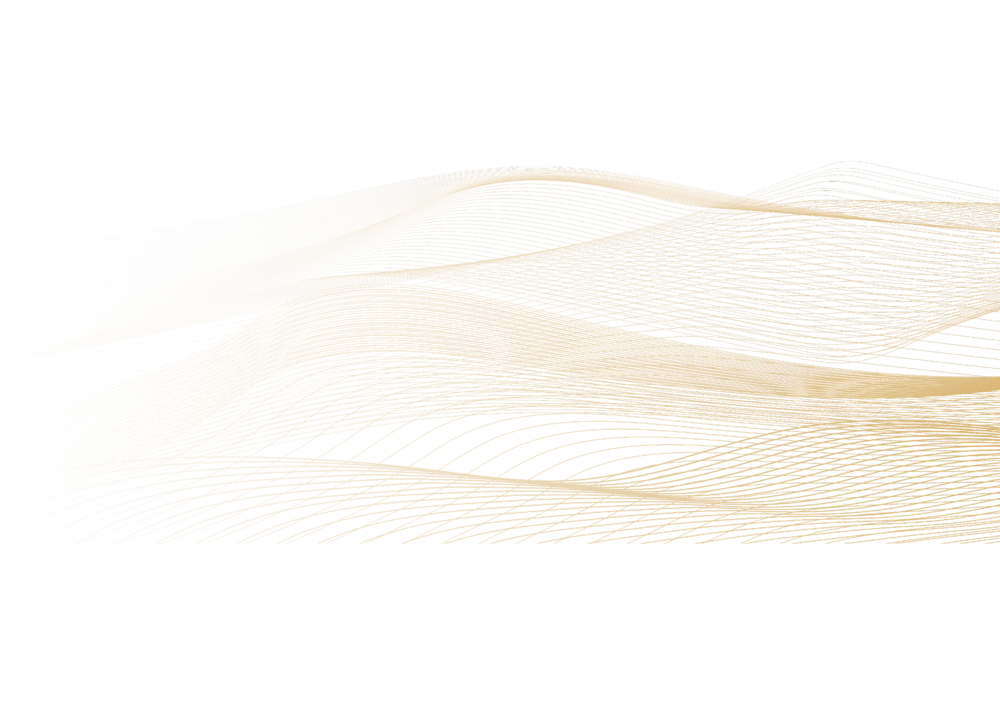
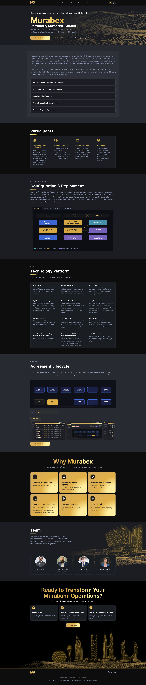
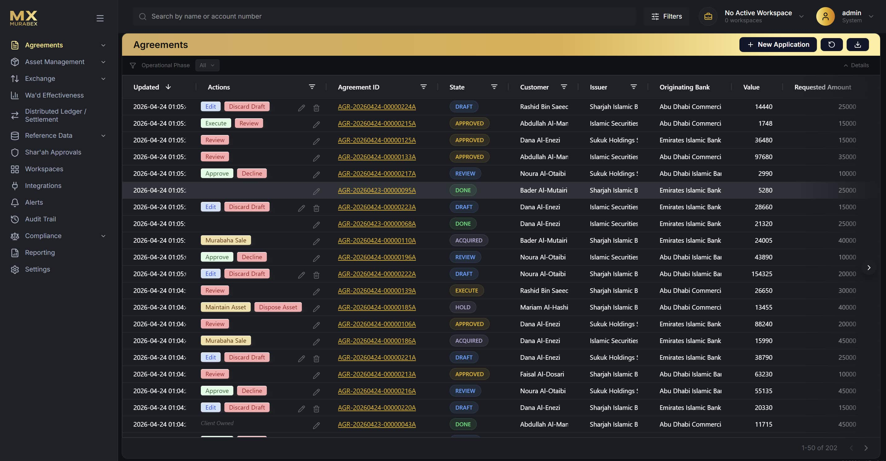
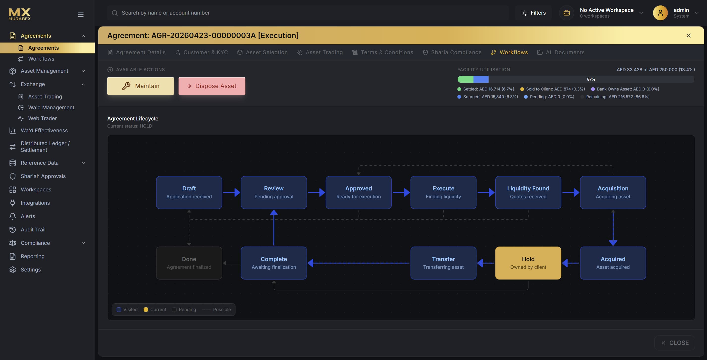
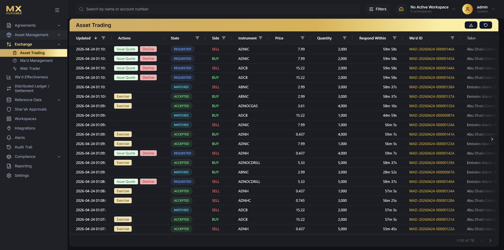
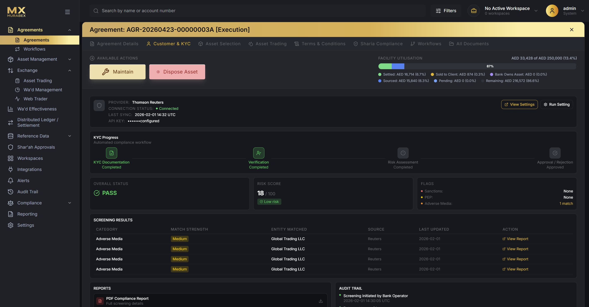

- Client
- Murabex
- Role
- Web design,
UI/UX, Illustration - Scope
- Brand site, Platform UI,
Illustration & icons - Year
- 2026
A sovereign, Shari'ah-compliant commodity Murabaha platform. I designed the brand site, the institutional product interface, and the original illustration and icon system.

The project
Enterprise Islamic finance, made to feel calm and precise.
Murabex is a digital finance platform that lets institutions execute Murabaha agreements and pool liquidity through a shared, sovereign ecosystem, connecting local banks, a national exchange and international investors on one trusted rail.
I led the visual design end to end: the public marketing site, the institutional product interface, and every illustration and icon in the system. The brief was to make a dense, regulated, Shari'ah-governed product feel trustworthy and effortless, gold on near-black, generous space, and a restrained interface where the data does the talking.
Landing page
I designed the full landing page, gold on black.
The landing sets the tone: a deep near-black canvas, warm gold gradients and fine contour line-work drawn from the region's dunes and skylines. Inter carries the voice, confident, institutional, unhurried.
The page moves from the promise (Shari'ah-compliant, community-driven, reliable) into the ecosystem, the participants and the technology, with clear calls to request a demo or build a sovereign ecosystem.

Full landing page, desktop & mobile — auto-scrolling preview
Product interface
An institutional interface for a regulated market.
Four core surfaces carry the platform: an agreements dashboard, the full agreement lifecycle, a competitive asset-trading exchange, and an automated KYC and compliance workflow. Dense tables, status systems and state machines, kept legible through hierarchy, colour-coded states and restraint.
A dark operator UI with gold as the single accent. Colour is reserved for meaning, trade sides, agreement states, risk and compliance signals, so a high-throughput system stays calm and scannable.



